I have chosen "1945-jap.txt" and "1945-ger.txt", which are from Unicode converted files on 80s and 90s conspiracy theories and politics in the project description website, to serve as the basis for this comparison and analysis.
Both documents are instruments of surrender signed by the respective nations at the conclusion of World War II in 1945—one being Japan's instrument of surrender (1945-Jap.txt) and the other, Germany's (1945-Ger.txt). In my view, these two documents are eminently suitable for comparative analysis; primarily because both nations were defeated powers sharing the same ideology during the war, and both documents serve as formal instruments of surrender.
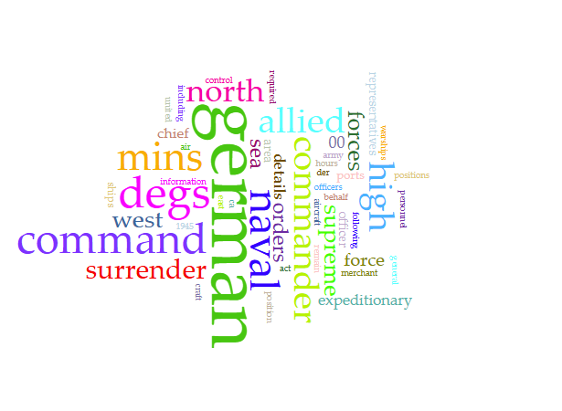
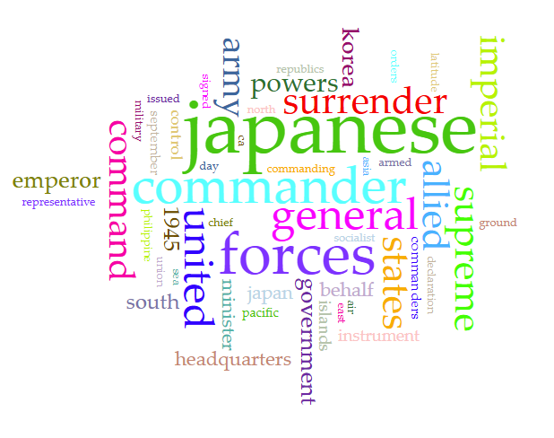
From the visualization of common terms shared between the two documents, we can observe that the most frequently occurring word in both instances refers to the respective nation itself. There are also directional descriptors; for instance, the word "north" appears very frequently in the German surrender document, whereas "south" is more prevalent in the Japanese surrender document.
Certain nouns—such as "behalf," "command," "surrender," and "forces"—occur with a remarkably high frequency in both texts. As illustrated in the visualization, "surrender" and "forces" account for a relatively larger proportion of the vocabulary in the Japanese surrender document, while "command" features more prominently in the German surrender document; the word "behalf," however, appears with roughly equal frequency in both documents.
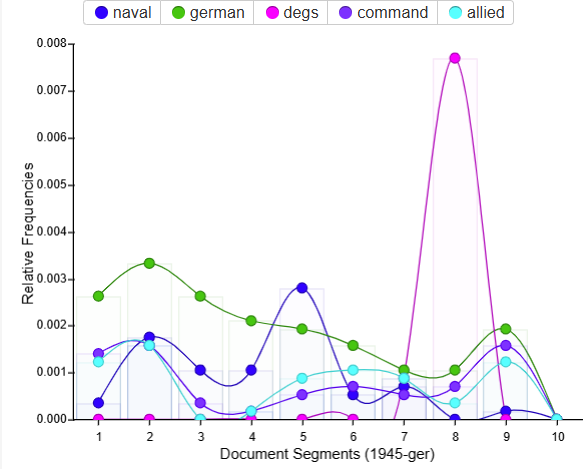
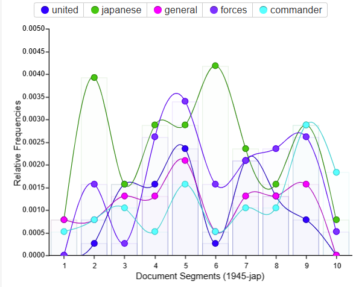
The Word Trend chart reveals distinct differences in the usage of common words. In the German documents, common words are distributed relatively smoothly across each segment; with the exception of the term "degs," no other common word exhibits a notably concentrated usage within any specific segment. The Japanese documents, conversely, present the exact opposite pattern: the usage frequency of virtually every word varies significantly from one segment to another, resulting in a visual landscape characterized by numerous undulating "hills."
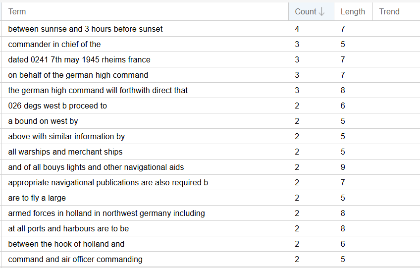
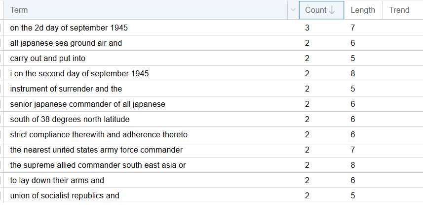
First, regarding phrase length, I limited the range to between 5 and 9 words, while the count is presented in descending order. In the German documents, numerous phrases repeated twice were not even listed (due to screen size constraints). It is evident that the probability of reusing such longer phrases is significantly higher in the German documents compared to the Japanese ones.
Secondly,aside from common words such as "the," "and," and "at"—the elements appearing most frequently within these "long word phrases" are the name of the country itself and the date 1945.
For this part, I compare all the N-gram size of 2, 3, and 4 with minimum frequency of 10. So there will be multiple figure section
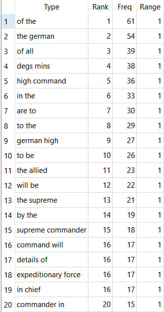
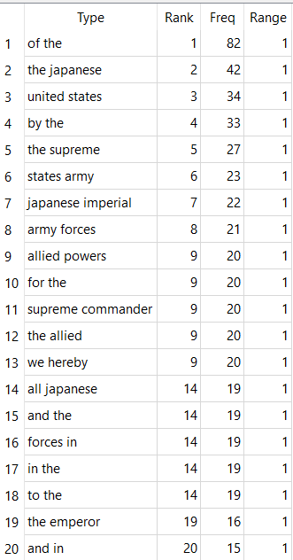
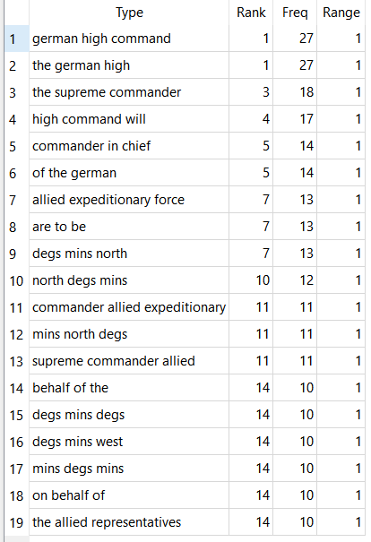
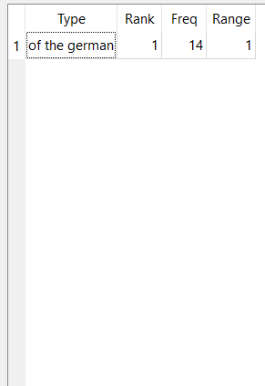
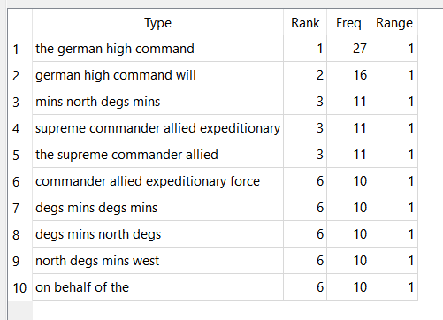
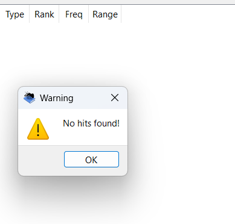
From these six images (which represent the N-grams of sizes 2, 3, and 4 derived from the two TXT files), we can observe that, in both documents, the larger the N-gram size, the lower the repetition rate. This phenomenon is entirely normal; with each increment in the N-gram size, the selection of an additional word is introduced—a choice that could potentially involve thousands of possibilities. Consequently, every increase in the N-gram size acts as a step in a progressive, layered filtering process. But for the German document, the repetition rate increases as the N-gram size increases, particularly when compared to the Japanese document. Japan document could not be found N-Gram size of 4 at all.
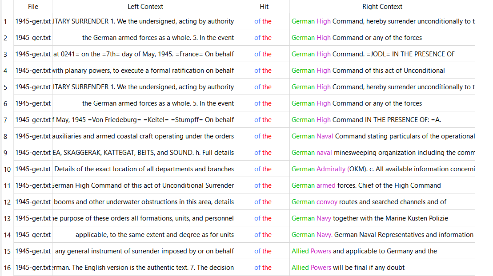
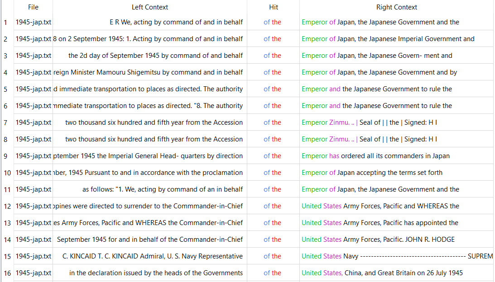
What the two have in common is that their "of the" structure is highly formal, both following the pattern: [noun] + of the + [institution/authority].
Both reflect authority structures, like for Germany is "...of the German High Command", for Japan is "...of the Emperor of Japan."
However, there are also differences between the two. German uses "of the" to describe their own systems like“...of the German High Command”, “...of the German Navy”, while Japanese uses it to declare authority like “...of the Emperor of Japan”, “...of the United State”.
In summary, although both texts are official surrender documents from the World War II era. And thus both exhibit a solemn and authoritative tone, but a comparative analysis reveals significant differences in their linguistic patterns, lexical repetition, and authoritative structures. The German text appears more repetitive and structurally cohesive; in contrast, the Japanese text demonstrates greater variability across its various sections to express even more about their attitude. Overall, this comparison demonstrates that text analysis tools such as Voyant and AntConc can effectively highlight the shared formal function of these documents, while simultaneously revealing the unique linguistic features that reflect the starkly different approaches adopted by these two nations in articulating their surrender.